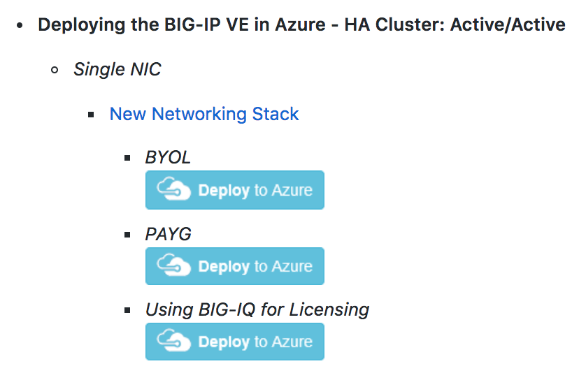
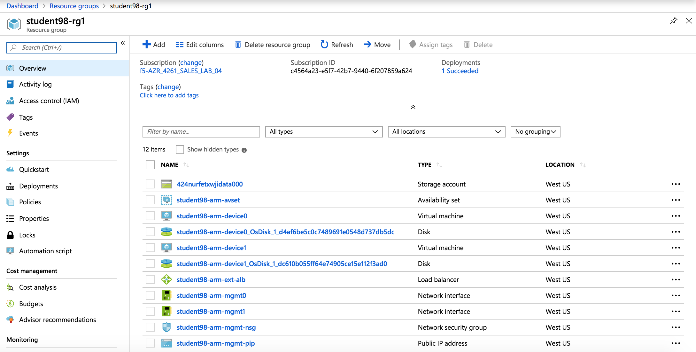
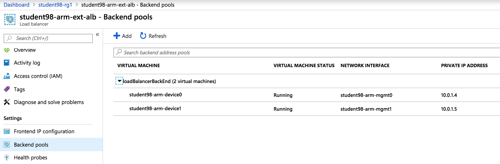
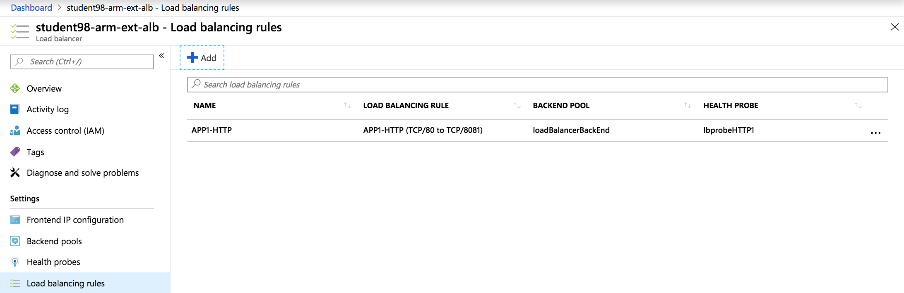
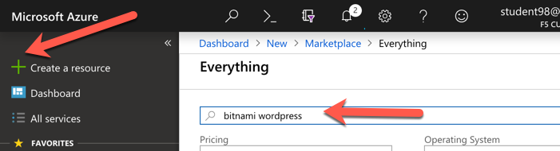
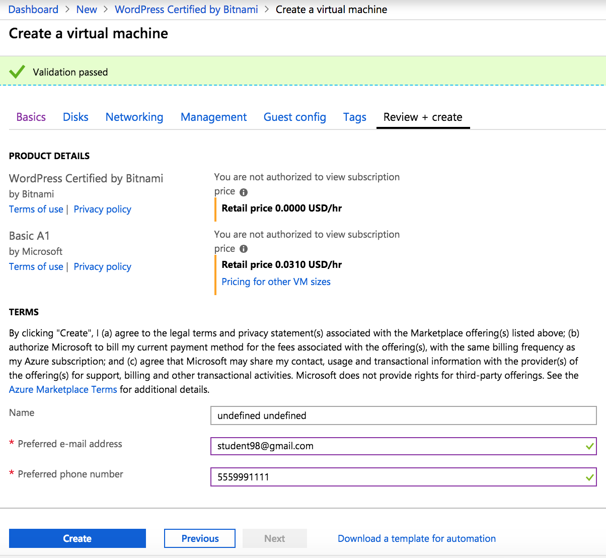

Community Training Classes & Labs > F5 Lab Days - Azure Index
2.3.1. Task – Deploy an ARM template¶
This task will walk through a series of steps in order to choose and deploy an ARM template in the Azure Portal. Let’s start by going to the Azure Portal.
Open a new browser and go to https://github.com/F5Networks/f5-azure-arm-templates
Scroll down and notice the different licensing options
Choose Deploying the BIG-IP VE in Azure - PAYG, New Networking Stack by right-clicking and opening in a new tab
Note
You will be directed back to the Azure Portal.
Alternatively, you can initiate a new template from Azure which will require a few more clicks and some copy/paste skills.
- Go to your Azure Portal dashboard
- Click the green + sign at the top left corner of the screen
- Start searching the marketplace by typing ‘template’ in the search field
- Hit Enter
- Select the Template Deployment and click Create
- Find the ARM template on github
- View the github azuredeploy.json file in “Raw”
- Select all text and copy
- Go back to Azure Portal
- Select all text and paste into the “Edit Template” window
- Click Save
- Or…just click the easy deploy button from github
You should now be back at the Azure Portal in “Custom Deployment”
Use the information provided in Table 3.1 to complete the Custom deployment process. Leave all other settings as default.
Table 3.1
Key Value Subscription <User Unique> Resource group Create new Resource group name student98-rg1 Location <Closest Azure DC> Admin Password ChangeMeNow123 Dns Name for Public IP student98-arm Scroll down and check “I agree to the terms and conditions stated above”
Click on Purchase
Review “Notifications” in the top right and wait for deployment complete.
Note
You just setup two BIG-IPs as a cluster without having to know any specific knowledge about the F5. Deployment can take 10-15 minutes so be patient. Both instances are active and are not setup the traditional way because of the network limitation in Azure. There is no L2 connectivity (similar to AWS). As a result, HA is assisted with placing an ALB in front of the F5 instances and also by using F5 sync groups.
{kind=link}
{kind=link}
2.3.2. Task – Review Results of ARM Template¶
In the previous task, you used an ARM template to automate the deployment of F5 instances and Azure networking components. Now is a good time to review other pieces that were created by the ARM template. Let’s go back to the Azure Portal.
Select Resource groups > student##-rg1 > student##-arm-ext-alb
Note
This load balancer is an Azure Load Balancer (ALB) which will be in front of the two BIG-IPs and used to support the setup of the cluster.
The ALB has some important NAT rules to explore. These will direct management traffic to the appropriate F5. Review the NAT rules first.
Click Inbound NAT rules
Note
Remember the different service ports. These will be used in subsequent steps to connect to the F5 for management purposes.
From the Resource Group, click Backend pools
Expand loadBalancerBackEnd to view the IP addresses of the F5 BIG-IPs sitting behind the Azure ALB
Note
Take note of these IP addresses. These are the applications running on the F5 instances. The ALB is load balancing each F5 in active/active.
Next you will need to create some Azure load balancing rules. These will help direct client/server traffic to the appropriate F5 based on F5 health within the active/active cluster. However, first Azure requires that health probes are created.
From the Resource Group, click Health probes
Then click the + Add button
Use the information provided in Table 3.2 to complete the “Add health probe” page. Leave all other settings as default.
Table 3.2
Key Value Name lbprobeHTTP1 Protocol HTTP Port 8081 Scroll down and select OK and the results will show one new health probe
The health probe is created and now you’ll need to create the Azure load balancing rules.
From the Resource Group, click Load balancing rules
Then click the + Add button

Use the information provided in Table 3.3 to complete the “Add load balancing rule” page. Leave all other settings as default.
Table 3.3
Key Value Name APP1-HTTP Backend port 8081 Scroll down and select OK and the results will show one new load balancing rule
Note
Take note of the different port mappings.
You will now connect to the F5 BIG-IPs. To do so you first need to identify the BIG-IPs’ public IP addresses.
Go to Resource groups and click on your resource group
From the Resource Group, click one of the F5 virtual machines and notice that both F5 BIG-IPs have the same public IP address
Hint
You can access each individual unit by using the service ports identified earlier in the NAT rules.
Open a browser and connect to the BIG-IPs’ management GUIs using the NAT’d service ports. In our case, the service ports are 8443 and 8444.
- F5 #1 = https://<public-IP>:8443
- F5 #2 = https://<public-IP>:8444
{kind=link}
{kind=link}
{kind=link}
{kind=link}
{kind=link}
{kind=link}
{kind=link}
{kind=link}
{kind=link}
2.3.3. Task – Deploy WordPress¶
In this task you will deploy another virtual machine and install the WordPress application to be placed behind the BIG-IP. Let’s go back to the Microsoft Azure Portal.
Click the green + sign at the top left corner of the screen
Start searching the marketplace by typing ‘bitnami wordpress’ in the search field and hit Enter
Select WordPress Certified by Bitnami
Click on Create at the bottom of the screen
Use the information in Table 3.4 to complete the “Basics” configuration page during this deployment.
Table 3.4
Key Value Resource Group Use existing: student##-rg1 Virtual machine name student##-wordpress Region <Closest Azure DC> Size Change: Basic A1 Authentication type Password Username azureuser Password ChangeMeNow123 Click Review + create at the bottom of the page
Verify the summary
Supply your email and phone number for validation
Click Create. You will receive status “Deployment underway”. Continue on after receiving “Your deployment is complete”.
Go to Resource groups and click on your resource group
Select your WordPress “Public IP address”
Note
Remember the WordPress private and public IP addresses. These will be used in subsequent steps.
Open a browser and navigate to http://<wordpress-public-IP>
{kind=link}
{kind=link}
{kind=link}
{kind=link}
{kind=link}
{kind=link}
{kind=link}
2.3.4. Task – Configure an F5 BIG-IP Pool and VIP for the WordPress application¶
In this task you will configure the BIG-IP with a Virtual Server and Pool to allow inbound Internet access to the WordPress application. Let’s go back to the Microsoft Azure Portal.
Hint
We will need the private IP address for the WordPress instance from Task 3.
Connect to the BIG-IP0 using https://<public-IP>:8443
From the BIG-IP GUI, go to Local traffic -> Pools -> Pool List and click on the + sign. Configure the pool using the information provided in Table 3.7 below leaving all other fields set to defaults.
Table 3.7
Key Value Name wordpress_pool Health Montitor http_head_f5 Node Name wordpress Address <your WordPress private IP address> Service Port 80 Click Finished. When configured correctly, the pool status will be green.
Check that the pool is synced to BIG-IP1 (same public IP, port 8444).
- Connect to the BIG-IP1 using https://<public-IP>:8444
- From the BIG-IP GUI, go to Local traffic -> Pools -> Pool List
- Verify that new pool “wordpress_pool” is successfully synced
Hint
The Azure Load Balancer NATs HTTP traffic 80 -> 8081. This is why the F5 virtual server you will create below listens on port 8081.
Now that the pool is created, you need a virtual server to accept traffic and load balance to the pool. You will need to go back to BIG-IP0 (port 8443) and create a transparent virtual server. A transparent virtual server is a special type of VS that listens on all IP addresses/ports and looks like 0.0.0.0/0.
Open or change browsers back to BIG-IP0 (port 8443)
Create a virtual server by going to Local Traffic -> Virtual Servers -> Virtual Server List and click on the + sign. Configure the Virtual Server using the information provided in Table 3.8 below leaving all other fields set to defaults.
Table 3.8
Key Value Name vs_wordpress Destination Address 0.0.0.0/0 Service Port 8081 Source Address Translation Auto Map Default Pool wordpress_pool 
Click Finish
Check the virtual server is green
Check that the virtual server is synced to BIG-IP1 (same public IP, port 8444).
- Connect to the BIG-IP1 using https://<public-IP>:8444
- From the BIG-IP GUI, go to Local traffic -> Virtual Servers -> Virtual Server List
- Verify that new virtual server “vs_wordpress” is successfully synced
Note
Since the virtual server is listening on port 8081, make sure the network security group for the Azure F5 instance allows port 8081. We’ll take care of that in the next steps.
Go back to Resource groups and click on your resource group
Select your F5 Network security group
Select Inbound security rules and review the current ruleset
Click + Add
Using the information provided in Table 3.9, add a rule to allow traffic to the new application on port 8081.
Table 3.9
Key Value Source Any Source Port * Destination Any Destination Port 8081 Protocol Any Action Allow Priority 103 Name f5-allow-8081 Note
This new inbound rule allows the client/server traffic to traverse the Azure load balancer, then hit the F5 virtual server on port 8081, then load balance to the WordPress server.
Click OK to complete the rule and to review the results
To verify proper functionality, let’s browse the site and verify F5 statistics.
Open a browser to to http://<alb-public-IP> and ensure it displays your WordPress blog.
Now check the statistics of your virtual server to verify traffic flow, by navigating to Statistics -> Module Statistics -> Local Traffic
Under Statistics Type, select Virtual Servers

You have now completed the BIG-IP configuration for the WordPress application. There are still some Azure tasks to complete.
{kind=link}
{kind=link}
{kind=link}
{kind=link}
2.3.5. Task – Restrict access to WordPress through the F5 BIG-IP only¶
This task involves locking down the network security group to restrict access to the WordPress application. We only want to allow access through the F5. Currently access still works direct to the WordPress application via public IP address http://<wordpress-public-IP> as demonstrated in the previous task. You now need to modify the network security group to remove direct inbound access to the WordPress application. Let’s go back to the Azure Portal.
Go to Resource groups and click on your resource group
Select your WordPress Network security group
Remove the HTTP and HTTPS inbound rules while leaving only SSH access
Note
You will only allow web access to the WordPress blog via the F5 BIG-IP.
Click on the … link at the far right side of the rule to be deleted

Click Delete
Confirm the delete action when prompted by clicking Yes
Now it’s time to confirm web access has been restricted to WordPress. Open a private browser window (not a normal window…choose private)
Verify that https://<WordPress-Public-IP> and http://<WordPress-Public-IP> do NOT display the WordPress blog
Note
You should now have an active/active F5 pair running in Azure with the WordPress application as a pool member. Traffic should flow successfully through the F5. However, traffic should fail if going direct to WordPress.
{kind=link}
{kind=link}
{kind=link}
2.3.6. Task – Test HA within Azure¶
In this task you will perform a system failover and validate that the WordPress application remains available.
Open two separate private browser windows
Tip
Use private browser windows to have both GUIs open at the same time. Since both BIG-IPs have the same IP, you cannot have two GUIs opened at the same time in one browser (it saves cookies).
Connect to the BIG-IP0 using https://<public-IP>:8443
Go to Device Management -> Devices
Select bigip0.azure.local (Self)
Scroll to the bottom of the page
Click Force Offline
Observe that you can still access WordPress.
Hint
Traffic flow is successful because the Azure LB is routing traffic to the other F5 instance.
Try forcing both F5 BIG-IPs offline and access the WordPress site again.
Connect to the BIG-IP1 using https://<public-IP>:8444 and repeat the same Force Offline procedure
- Go to Device Management -> Devices
- Select bigip0.azure.local (Self)
- Scroll to the bottom of the page
- Click Force Offline
Note
Were you able to access WordPress?
The next test is to bring one or both F5 instances back online and then test WordPress again.
Hint
You will need to “Release Offline” one of the BIG-IPs.
Connect to the BIG-IP1 using https://<public-IP>:8444
Go to Device Management
Select bigip1.azure.com (Self)
Scroll to the bottom of the page
Click Release Offline
Note
Can you access the site now? Check that http://<public-IP> is available.
{kind=link}
{kind=link}
{kind=link}
2.3.7. Task – Lab 3 Teardown¶
Delete resource group student##-rg1 and created earlier in this lab.
- From Azure Portal select Resource Group
- Select … on right side of the resource group created earlier
- Select delete. You will be prompted to enter resource again for confirmation.
Enter resource group name when prompted for resource group to be deleted.

This concludes Lab 3
2.3.8. Appendix – Troubleshooting¶
[azureuser@bigip0:Active:In Sync] ~ # tmsh run cm sniff-updates
Listening for commit_id_update on -i internal:h port 6699 (^C to exit)
[10:30:53] bigip0.azure.local (v13.0.0) -> bigip-azure-sync-failover: UPDATE CID 75.0 (bigip0.azure.local) at 10:30:53 FORCE_SYNC
[10:30:53] 10.10.1.101:42506 -> bigip-azure-sync-failover: SYNC_REQ CID 1.0 (bigip0.azure.local) at 10:25:34
[10:30:53] bigip1.azure.local (v13.0.0) -> bigip-azure-sync-failover: UPDATE CID 75.0 (bigip0.azure.local) at 10:30:53 FORCE_SYNC
[10:32:27] bigip1.azure.local (v13.0.0) -> bigip-azure-sync-failover: UPDATE CID 31.0 (bigip1.azure.local) at 10:32:27 FORCE_SYNC
[10:32:27] 10.10.1.100:59354 -> bigip-azure-sync-failover: SYNC_REQ CID 75.0 (bigip0.azure.local) at 10:30:53
[10:32:27] bigip0.azure.local (v13.0.0) -> bigip-azure-sync-failover: UPDATE CID 31.0 (bigip1.azure.local) at 10:32:27 FORCE_SYNC